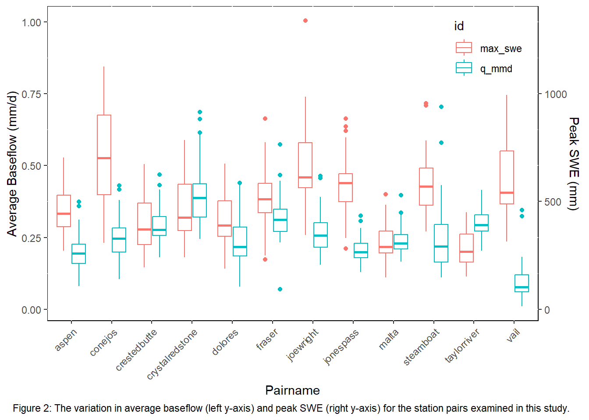

Chapter 4 Data and Methodology
Load packages
library(tidyverse)
library(tidyr)
library(httr)
library(jsonlite)
library(plotly)
library(lubridate)
library(dataRetrieval)
library(sf)
library(mapview)
library(readr)
library(dplyr)
library(purrr)
library(fuzzyjoin)
library(furrr)
library("snotelr")
library(readxl)
library(stats)
library(tmap)
library(tigris)
library(elevatr)
library(raster)4.1 Data
To analyze the correlation between peak SWE and baseflow, discharge data from 13 USGS gauges in the Southern Rockies of Colorado were examined from October 1st, 1979, to September 30th, 2022. Stations with greater than ten percent missing data during the time period were excluded. The drainage basins that contain each stream gauge vary in latitude, elevation and area (Table 1). Each stream gauge was paired with an NRCS SNOTEL station within or just outside the drainage basin (Table 1). When the nearest SNOTEL station was lacking data, another nearby station was selected based on the clusters defined by Fassnacht and Derry (2010). Peak SWE data from the SNOTEL stations were used.
Table 1: the USGS and SNOTEL station pairs in order of northern-most latitude to southern-most.
#download the streamflow data
streamstations <- c("06614800",
"09032100",
"09034900",
"09165000",
"09238900",
"09112200",
"09107000",
"09081600",
"09066300",
"08246500",
"09073300",
"07083000")
sitedata <- readNWISdv(siteNumber = streamstations, parameterCd = "00060",
"1979-10-01", "2022-09-30")
#create index column and remove cd column
sitedata <- sitedata %>%
mutate(., index = 1:nrow(sitedata)) %>%
dplyr::select(c(agency_cd, site_no, Date, X_00060_00003, index)) %>%
addWaterYear()
#convert to mm/d and clean up columns
station_met <- readNWISsite(streamstations)
station_met_clean <- station_met %>%
dplyr::select('agency_cd','site_no', 'drain_area_va')
sitedata_join <- sitedata %>%
left_join(.,station_met_clean, by = "site_no")
sitedata_join <- sitedata_join %>%
dplyr::select(c(index, agency = agency_cd.x, site_no, Date, q_cfs = X_00060_00003, drain_area_va, WY = waterYear)) %>%
mutate(., da_km = drain_area_va * 2.58999, q_mmd = (q_cfs * 0.0283168 * 86.4)/da_km)
sitedata_clean <- sitedata_join %>%
dplyr::select(c(index, agency, site_no, Date, WY, q_mmd))
sitedata_clean <- read_csv(file = 'data/sitedata_clean.csv', col_names = TRUE)Below is a map of the station pair locations in the state of Colorado.
#USGS guage map
readyforsf <- read_xlsx("~/WR440/WR440/data/stationmetadata.xlsx") %>%
filter(stationtype == "USGS") %>%
rename(., Longitude = dec_long_va, Latitude = dec_lat_va, Site = stationcode) %>%
dplyr::select(., c("Latitude","Longitude","pairname"))
usgs_sf <- st_as_sf(readyforsf, coords = c("Longitude","Latitude"), crs = 4326)
co <- tigris::states("CO", year = "2000", cb = TRUE, resolution = "500k", progress_bar = F) %>%
filter(NAME == "Colorado")
elev <- get_elev_raster(co, z = 6) %>%
crop(co)
qtm(co) +
tm_shape(elev) +
tm_raster(style = 'cont',
palette = '-YlGnBu', n = 5,
legend.show = F) +
tm_shape(usgs_sf) +
tm_bubbles(col = "gray20", size = 0.5)+
tm_shape(usgs_sf)+
tm_text("pairname", just = 0.5, size = 1, xmod = 0.75, ymod = 0.75)4.2 Methods
In snow dominated watersheds, the hydrograph demonstrates a large peak occurring at the onset of melt that eventually levels off at lower values for most of the rest of the year. The traditional water year (WY, in the US October 1 through September 30) separates peak melt and baseflow into two different WYs. To reflect the hydrologic processes that are occurring in snow-dominated watersheds, we propose using a melt year (MY) beginning with the onset of snowmelt (the first deviation from baseflow) and ending with the onset of the following year’s snowmelt (Figure 2). The beginning of the MY was defined as the day at which the rate of increase in discharge changes.
avg_val <- read_csv(file = 'data/avg_val.csv', col_names = TRUE)
#find the standard deviation of average baseflow values at each station
stdev <- avg_val %>%
pivot_wider(names_from = 'site_no', values_from = 'avg_qbase') %>%
sapply(sd, na.rm = TRUE)
stdev <- stdev %>%
as.data.frame() %>%
rename(bf_sd = 1) %>%
rownames_to_column('site_no') %>%
filter(site_no != 'my')
readyforcorrel <- read_csv("data/readyforcorrel.csv")
stdevsno <- readyforcorrel %>%
pivot_wider(names_from = 'site_no', values_from = 'max_swe') %>%
sapply(sd, na.rm = TRUE)
stdevsno <- stdevsno %>%
as.data.frame() %>%
rename(swe_sd = 1) %>%
rownames_to_column('site_no') %>%
filter(site_no != c('my','q_mmd','pairname','paircode','site_id'))
sd_join <- stdev %>%
inner_join(stdevsno, by = "site_no")
save(sd_join, file = 'data/sd_join.RData')
load('data/sd_join.RData')
means <- readyforcorrel %>%
dplyr::select(q_mmd,site_no,max_swe) %>%
group_by(site_no) %>%
summarise_all(funs(mean(., na.rm = TRUE)))
sd_join <- sd_join %>%
mutate(bf_cov = sd_join$bf_sd / means$q_mmd,
swe_cov = sd_join$swe_sd / means$max_swe)
snobox <- readyforcorrel %>%
dplyr::select(q_mmd, pairname, max_swe, my)
snobox <- snobox %>%
pivot_longer(cols = c('max_swe','q_mmd'), names_to = 'id', values_to = 'value')
snobox2 <- snobox %>%
mutate(changed = case_when(id == 'max_swe' ~ value / 1333,
id == 'q_mmd' ~ value))
ggplot(snobox2, aes(x=pairname)) +
geom_boxplot( aes(y=changed,color = id)) +
scale_y_continuous(
name = "Average Baseflow (mm/d)",
sec.axis = sec_axis(~.*1333, name="Peak SWE (mm)" ))+
labs(x = "Pairname")+
theme(axis.text.x = element_text(angle = 45, vjust = 1, hjust=1),
panel.background = element_rect(fill = "white",colour = "black"),
panel.grid.minor.x = element_line(colour = "black"),
legend.key = element_rect(fill = "white"),
legend.justification = c("right", "top"),
legend.position = c(.98, .98))+
labs(caption = "Figure 2: The above figure depicts the variance in average baseflow on \n the left y-axis and the variance in peak SWE on the right y-axis across the station pairs.")+
theme(plot.caption = element_text(hjust = 0.5))
To find the onset of melt, the cumulative sum of the runoff was calculated for each water year. Using the cumulative sum, the onset of melt was selected as the first day when the daily slope was K times greater than the baseflow slope. The constant K was determined to be 6 after testing other values in order to ensure that an onset of melt date was selected for a reasonable time frame. The baseflow slope was calculated between January 1 and March 31.
#create empty df to store MY results
columns <- c("site_no", "MY_start")
avg_qbase_results <- data.frame(matrix(nrow = 0, ncol = length(columns)))
colnames(avg_qbase_results) = columns
#Onset of melt occurs when the daily slope of cumulative baseflow * K = daily slope of cumulative runoff
#finds one slope value per year for baseflow (Jan1-March31)
winter_nest <- sitedata_clean %>%
mutate(month = month(Date),
day = yday(Date)) %>%
group_by(site_no, WY) %>%
mutate(cs_WY = cumsum(q_mmd)) %>%
arrange(Date) %>%
filter(month %in% 1:3) %>%
arrange(site_no, Date) %>%
nest()
winter_bflow <- winter_nest %>%
mutate(mods = map(data, ~ lm(cs_WY ~ day, data = .x))) %>%
mutate(slope = map(mods, broom::tidy)) %>%
dplyr::select(-mods,-data) %>%
unnest(slope) %>%
filter(term == 'day') %>%
rename(baseslope = estimate) %>%
dplyr::select(site_no, WY, baseslope)%>%
mutate(K_base12 = baseslope * 12,
K_base10 = baseslope * 10,
K_base6 = baseslope * 6)
#need one slope value per day not per year like winter_bflow
snowmelt_nest <- sitedata_clean %>%
mutate(month = month(Date),
day = yday(Date)) %>%
group_by(site_no, WY) %>%
mutate(cs_WY = cumsum(q_mmd)) %>%
arrange(site_no, Date) %>%
filter(month %in% 4:6) %>%
arrange(site_no, Date)
dailyslope <- snowmelt_nest %>%
mutate(dailys = cs_WY - lag(cs_WY)) #when dailyslope >= baseslope *12, pull min date
#if(baseslope * 12 >= dailyslope, Date(need first occurrence), "")
pickonset <- dailyslope %>%
left_join(winter_bflow, by = c('WY', 'site_no')) %>%
mutate(start = if_else(dailys >= K_base6, 1, 0))
avg_qbase <- pickonset %>%
filter(start == 1) %>%
group_by(site_no, year = year(Date)) %>%
mutate(MY_start = min(Date))
avg_qbase_results <- avg_qbase %>%
dplyr::select(site_no, MY_start, year) %>%
mutate(my = year(MY_start)) %>%
ungroup() %>%
distinct(site_no, my, .keep_all = T) %>%
mutate(MY_end = dplyr::lead(MY_start,1)-1) %>%
mutate(my_length = MY_end - MY_start)
faster_joinery <- function(one_place, one_site ){
one_place %>%
ungroup(.) %>%
fuzzy_left_join(one_site,
by = c('Date' = 'MY_start',
'Date' = 'MY_end'),
match_fun = list(`>=`,`<=`)) %>%
filter(!is.na(my))
}
site_my_bundle <- sitedata_clean %>%
group_by(site_no) %>%
nest()
sitedata_q_bundle <- avg_qbase_results %>%
group_by(site_no) %>%
nest() %>%
rename(my_data = data)
plan(multicore, workers = 6)
bundles <- inner_join(site_my_bundle,sitedata_q_bundle) %>%
mutate(new_data = future_map2(data,my_data,faster_joinery))
MY <- bundles %>%
dplyr::select(-my_data, -data) %>%
unnest(new_data)
MY <- read_csv(file = 'data/MY.csv', col_names = TRUE)
MY_sitedata <- MY %>%
dplyr::select(-WY, -year)
save(MY_sitedata, file = 'data/my_sitedata.RData')Once the MY was identified, we ranked and found the probability of exceedance for each discharge value. Flow duration curves (FDC) were constructed by plotting the discharge values against the probability of exceedance for each value per year (Figure 3). The discharge values that fell within 50-90% probability were deemed to be baseflow (Smakhtin, 2001) (Figure 3). Then, we directly correlated peak SWE and the average baseflow values from the same MY. We also compared average baseflow to the previous years’ peak SWE using a 5, 4, 3, 2, 1, and 0-year lag. For example, MY 1980 average baseflow was compared to peak SWE from MY 1975-1980.
Figure 3: the above figure depicts a sample flow duration curve (FDC) with baseflow isolated in gray. The WY is displayed on the left and the MY is displayed on the right.
#Rank each day's q_mmd value by magnitude
#Find probability of each rank
#Extract q_mmd values for 0.5-0.9 probability (Qbase for the MY)
load('data/my_sitedata.RData')
fdc <- MY_sitedata %>%
group_by(site_no, my) %>%
mutate(rank = rank(-q_mmd),
rankmax = max(rank),
prob = rank/rankmax) %>%
filter(prob >= 0.5 & prob <= 0.9) %>%
mutate(avg_qbase = mean(q_mmd, na.rm = T))
avg_val <- fdc %>%
dplyr::select(site_no,my,avg_qbase) %>%
distinct(avg_qbase) %>%
pivot_wider(names_from = 'site_no', values_from = 'avg_qbase')
Table 2: The below table shows the coefficients of variation (COV) for baseflow and peak SWE at each of the station pairs.
#correlate fraser WY with MY
fraserWY <- sitedata_clean %>%
filter(site_no == "09032100") %>%
group_by(WY) %>%
mutate(rank = rank(-q_mmd),
rankmax = max(rank),
prob = rank/rankmax) %>%
filter(prob >= 0.5 & prob <= 0.9) %>%
mutate(wyavg_qbase = mean(q_mmd, na.rm = T))
wyavgfraser <- fraserWY %>%
dplyr::select(site_no,WY,wyavg_qbase) %>%
distinct(wyavg_qbase) %>%
mutate(pairname = "fraser")
#pivot_wider(names_from = 'pairname', values_from = 'wyavg_qbase')
myavgfraser <- avg_val %>%
filter(site_no == "9032100") %>%
mutate(pairname = "fraser",
WY = my)
fraserjoin <- wyavgfraser %>%
left_join(y = myavgfraser, by = c("pairname","WY")) %>%
na.omit() %>%
ungroup()
frasercorrel <- fraserjoin %>%
summarize(correl = cor(avg_qbase, wyavg_qbase))Then, we directly correlated peak SWE and the average baseflow values from the same MY. We also compared average baseflow to the previous years’ peak SWE using a 5, 4, 3, 2, 1, and 0-year lag. For example, MY 1980 average baseflow was compared to peak SWE from MY 1975-1980.
#download snow data and join to avg baseflow data
SNOTEL_all <- snotel_download(site_id = c(551,838,335,586,457,380,680,618,842,431,542,369), path = tempdir('../data'), internal = TRUE)
sno_clean <- SNOTEL_all %>%
dplyr::select(network, site_id, site_name, snow_water_equivalent, Date = date) %>%
addWaterYear()
peak_swe <- sno_clean %>%
mutate(Date = lubridate::ymd(Date)) %>%
group_by(site_id, waterYear) %>%
summarise(max_swe = max(snow_water_equivalent, na.rm=TRUE)) %>%
filter(max_swe > 1) %>%
mutate(my = waterYear)
stationcodes <- read_csv('data/stationcodes.csv') %>%
mutate(site_no = str_replace_all(site_no, '"',''))
avgbase_join <- avg_val %>%
pivot_longer(cols = starts_with("0"), names_to = "site_no", values_to = "q_mmd") %>%
left_join(stationcodes, by = "site_no")
big_join <- avgbase_join %>%
left_join(peak_swe, by = c("site_id","my")) %>%
dplyr::select(-waterYear)The peak SWE values were sorted into low, average, and high snow years using a histogram separating the bins by 0.5 standard deviations from the mean. A multivariate regression was run on average baseflow values with the intercept being a 0–5-year lag to peak SWE. This was calculated for low, high and all snow years. Covariance was calculated for the same parameters as well. Finally, the standard deviation and coefficient of variation (COV) of the average baseflow and peak SWE were calculated for each station pair. The COV was calculated by dividing the standard deviation by the mean for both baseflow and peak SWE.
#Correlate MY vs peak SWE all years (0–5-year lags)
#Separate low and high snow years using 0.5 std. dev. from mean
#Run direct correlation for individual years from 0 to 5-year lags for all years, then low and high snow years
big_join <- read_csv(file = 'data/readyforcorrel.csv', col_names = TRUE)
lags <- big_join %>%
group_by(paircode) %>%
mutate(swelag1 = lag(max_swe, order_by = my),
swelag2 = lag(swelag1, order_by = my),
swelag3 = lag(swelag2, order_by = my),
swelag4 = lag(swelag3, order_by = my),
swelag5 = lag(swelag4, order_by = my))
#correlation between all snow years and avg baseflow
all <- lags %>%
group_by(site_no,site_id, pairname) %>%
na.omit(.) %>%
summarize(lag0 = cor(max_swe, q_mmd),
lag1 = cor(swelag1, q_mmd),
lag2 = cor(swelag2, q_mmd),
lag3 = cor(swelag3, q_mmd),
lag4 = cor(swelag4, q_mmd),
lag5 = cor(swelag5, q_mmd))
longsnowcore <- all %>%
pivot_longer(cols = starts_with("lag"),values_to = "correl", names_to = "lag")
#correlation between high snow years and avg baseflow
snow_hi_lo <- lags %>%
group_by(pairname) %>%
na.omit(.) %>%
mutate(quants = ifelse(max_swe > mean(max_swe) + sd(max_swe)*.5, 'hi','avg'),
quants = ifelse(max_swe < mean(max_swe) - sd(max_swe)*.5,'lo',quants))
high <- snow_hi_lo %>%
group_by(site_no,site_id, pairname) %>%
na.omit(.) %>%
filter(quants == "hi") %>%
summarize(lag0 = cor(max_swe, q_mmd),
lag1 = cor(swelag1, q_mmd),
lag2 = cor(swelag2, q_mmd),
lag3 = cor(swelag3, q_mmd),
lag4 = cor(swelag4, q_mmd),
lag5 = cor(swelag5, q_mmd))
longhigh <- high %>%
pivot_longer(cols = starts_with("lag"),values_to = "correl", names_to = "lag")
#correlation between low snow years and avg baseflow
low <- snow_hi_lo %>%
group_by(site_no,site_id, pairname) %>%
na.omit(.) %>%
filter(quants == "lo") %>%
summarize(lag0 = cor(max_swe, q_mmd),
lag1 = cor(swelag1, q_mmd),
lag2 = cor(swelag2, q_mmd),
lag3 = cor(swelag3, q_mmd),
lag4 = cor(swelag4, q_mmd),
lag5 = cor(swelag5, q_mmd))
longlow <- low %>%
pivot_longer(cols = starts_with("lag"),values_to = "correl", names_to = "lag")
#find covariance between peak SWE and avg baseflow for all, high and low snow years
allcov <- lags %>%
group_by(site_no,site_id, pairname) %>%
na.omit(.) %>%
summarize(lag0 = cov(max_swe, q_mmd),
lag1 = cov(swelag1, q_mmd),
lag2 = cov(swelag2, q_mmd),
lag3 = cov(swelag3, q_mmd),
lag4 = cov(swelag4, q_mmd),
lag5 = cov(swelag5, q_mmd))
highcov <- snow_hi_lo %>%
group_by(site_no,site_id, pairname) %>%
na.omit(.) %>%
filter(quants == "hi") %>%
summarize(lag0 = cov(max_swe, q_mmd),
lag1 = cov(swelag1, q_mmd),
lag2 = cov(swelag2, q_mmd),
lag3 = cov(swelag3, q_mmd),
lag4 = cov(swelag4, q_mmd),
lag5 = cov(swelag5, q_mmd))
lowcov <- snow_hi_lo %>%
group_by(site_no,site_id, pairname) %>%
na.omit(.) %>%
filter(quants == "lo") %>%
summarize(lag0 = cov(max_swe, q_mmd),
lag1 = cov(swelag1, q_mmd),
lag2 = cov(swelag2, q_mmd),
lag3 = cov(swelag3, q_mmd),
lag4 = cov(swelag4, q_mmd),
lag5 = cov(swelag5, q_mmd))The Fraser sites were used as a case study to examen the results on a small signular basin scale.
fraser <- read_csv(file = 'data/readyforcorrel.csv', col_names = TRUE)
highsno <- mean(fraser$max_swe) + sd(fraser$max_swe)*0.5
lowsno <- mean(fraser$max_swe) - sd(fraser$max_swe)*0.5
mean <- mean(fraser$max_swe)Basin characteristics like drainage area, elevation, and latitude were then examined with respect to the results from the correlation between peak SWE and baseflow as well as the contrast between 0-5-year lags.